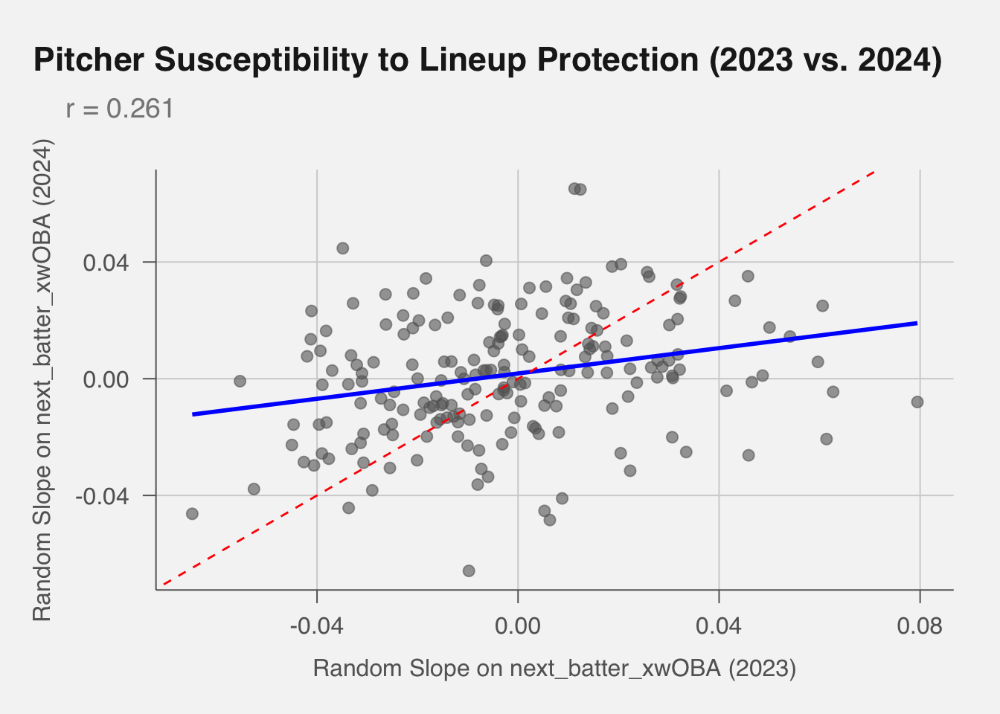

Blog Post #1: Lineup Protection or Lineup Penalty?
lineup protection
lineups
statcast
Author
Lance Brady
Published
February 18, 2025
Takeaways
The next batter’s xwOBA does have a small but significant impact on the current plate appearance’s xwOBA, and this effect is negative. A stronger on-deck hitter results in lower than expected outcomes for that plate appearance.
Some of the league’s best pitchers perform better when a strong hitter is on deck, serving as an indication of mental aptitude or ability to elevate in high-leverage moments that makes them so successful. This suggests that lineup protection may not be a universal phenomenon and that individual pitchers may have different responses to it.
While we see evidence pointing to fewer walks, more strikeouts, and fewer extra base hits with better next_batter_xwOBA, we cannot conclusively point to the next batter’s xwOBA as the cause of these effects.
Even when controlling for batter skill, matchup effects, and game state, a higher next_batter_xwOBA is associated with a small but statistically significant decrease in the current batter’s expected batting average (xBA) for that plate appearance. If the next batter’s xwOBA goes up by 0.100, we estimate a ~-0.003 reduction in pa_xBA per plate appearance—over 500 plate appearances, that amounts to about 1.5 fewer hits compared to otherwise.
When we select certain fixed effects, we find that the next batter’s xwOBA continue to have a small but significant impact on the current plate appearance’s xwOBA, and this effect is negative. A stronger on-deck hitter results in lower than expected outcomes for that plate appearance.
Introduction to Lineup Protection
Batting order optimization is a heavily studied aspect of baseball decision-making, where teams construct lineups to maximize run production. Most studies in this area assume that hitters in the lineup are independent of one another. However, the concept of lineup protection—the idea that a hitter’s performance is influenced by the quality of the hitter after them—remains debated within the sabermetrics community, most often not believed in by it; it has not been supported by previous statistical studies. Although batting order decisions may offer only marginal advantages in expected runs, in an era where every competitive edge counts, even subtle effects like lineup protection deserve closer examination. The theory behind lineup protection is that a hitter with a good hitter behind them will be harder to pitch around because pitchers won’t want to face the guy after him either, particularly with more runners on base. Thus, walks would decrease, and that would mean more fastballs, strikes, and pitches over the plate, essentially increasing the probability for productive hitting, specifically extra-base hits (doubles, triples, and homeruns).
There are two main ways to study lineup protection:
Pitcher-Centric Analysis: Examining how pitchers alter their approach based on the quality next hitter. Previous research using 30 hitter pairs since the advent of Statcast suggested that protected hitters see an average of 0.25% more strikes compared to league average, and 0.07% more pitches down the middle of the zone. This would lead to 6 additional strikes and 2 additional pitches down the middle over a season. This study was extremely limited, however, and did not account for situations without protection, only used 30 pairs of hitters, and only compared the strike percentage a protected hitter received to the league average of that year, not to the strike percentage they had in other non-protected plate appearances. If lineup protection were to exist, teams should avoid wasting lineup protection on free swingers (putting free swingers before “protectors”) so that the protection is not wasted on hitters who would swing at a higher rate anyway (The Paraball Notes, 2024). Quantitatively, the hitter who bats behind you SHOULD impact the pitches you see, because the run expectancy of certain plays occurring (like walks) would change based on who the following batter is (Weinberg, 2013). Evidence of certain pairs often seems to point to the opposite, with a 2012 evaluation of players hitting after Andrew McCutchen, Ryan Braun, and Joey Votto showing no evidence that pitchers were pitching them differently based on the protection they had (Cameron, 2012).
Hall of Famer Miguel Cabrera attributed part of his power struggles early in the 2019 season to a lack of lineup protection, essentially calling out productive-yet-not-spectacular hitter behind him, Niko Goodrum, saying, “In the past… I got a big bat behind me. You see the way guys pitch me? that explains everything.” His manager responded by saying his statement was “crazy.” Data revealed that he wasn’t getting particularly fewer fastballs, strikes, or good pitches to hit in general, and that in his particular case, there wasn’t evidence for lineup protection (Stavenhagen, 2019).
Hitter Outcome Analysis: Investigating whether the quality of the next hitter influences the current hitter’s performance. Pre-Pitch F/X research found that pitchers who know that a good hitter is up next will “pitch around” the current hitter, resulting in significantly more walks, and moderately more strikeouts. However, it found that when it comes to putting the ball in play, there was no significant impact (Tango, 2006). Much of the sabermetric community says that lineup protection is a myth, and that a player’s production is almost solely determined by their own skills; luck and random variation also play a small role (Ambrosino, 2011). A 2008 study found that with a small magnitude, the quality of the on-deck hitter negatively impacts the preceding hitter (Bradbury, 2008).
However, a study in 2011 using Retrosheet play-by-play data from 2002-2009 MLB seasons found that power numbers did have significant differences in situations of potential lineup protection. This study argues that previous evidence of lineup protection was not uncovered because endogeneity bias introduced by managers selectively choosing their lineups. For a player’s own performance, they likely are hitting better than their own season averages when they are near the top of the lineup (they have more protection) because they are already doing well at that time for a number of reasons. A good hitter who, for whatever reason, is hitting poorly will be put at the bottom of the lineup (and have less protection), but likely hit well at that spot, and thus, we would observe better hitting with less protection. Thus, protection and performance numbers become tangled in unobservable ways. While these endogeneity issues are a concern, they seem to work in both directions, and with a robust enough dataset, we should be able to see the effects of lineup protection, if it is a real phenomenon.
Using injuries to a batter’s “protector” as a quasi-random natural experiment, this study finds that batters who have stronger protection (i.e., a higher OPS hitter behind them) produce significantly more power. Specifically, a 100-point increase in the protector’s OPS correlates with a 9.7% rise in extra-base hits, and the effect is especially pronounced for third hitters (a 26% increase). The results also suggest that when left unprotected, batters draw more walks—particularly intentional walks, as previous literature has supported (Phillips, 2011). It also found that hits in general remained unchanged with protection or not, suggesting that batters are not simply putting the ball into play fewer times, but having less powerful, and thus, productive, contact. However, this study simply made claims about the distribution of outcomes and not about overall offensive production. Protected hitters got fewer walks and more extra-base hits, which act in opposing manners. Our study will use Expected Weighted On-Base Average, an offensive statistic that correlates directly with a player’s overall contribution to run production from the plate, to tackle this gap in research.
We will also use a large sample size of over 3 million plate appearances from 2015-2024 to ensure that our results are robust.
Most other previous literature of hitter outcome analysis has been rather anecdotal, focusing on specific players and how they fare with protection. Using over 3000 Plate Appearances from Pete Alonso’s career before his 2024 season, we can see higher slugging percentages with better hitters behind him, along with being 11% more likely to homer. With worse protection, he is more likely to walk, although his strikeout rates go against previous research and actually decrease with poor hitters behind him (Britton, 2024). Other research takes specific teams and analyzes whether the topic of lineup protection even applies and whether it serves a purpose in that roster’s decision-making. When the Diamondbacks acquired Mark Trumbo in 2014, writers brought up the fact that even though Trumbo’s power threat could serve to protect Paul Goldschmidt, Trumbo may not even be much better than other Diamondbacks hitters who could replace him in terms of offensive threat in general (Wiser, 2014). In 2015, Billy Hamilton pointed to a different sort of offensive advantage owing to the hitter behind him–knowing Joey Votto was hitting after him, an incredibly selective hitter often with long counts, allowed Hamilton to be patient and wait for the right pitch to steal on. In this situation, with a small sample size, the threat of Votto was preventing opposing pitchers from throwing fastballs with Hamilton on base, allowing Hamilton to get better base-stealing opportunities (Petriello, 2015).
It is worth noting that many within baseball discuss lineup protection with certainty. Alonso had pushed for J.D. Martinez to join and hit behind him for the Mets in 2024, hoping it would help his offensive statistics. Interviews with several within the game in 2015 resulted in a plethora of answers, from Joe Girardi saying lineup protection was most significant in lefty-righty matchups, Madison Bumgarner saying he doesn’t pay attention to the on-deck circle, Tim Hudson saying that it’s “foolish if you don’t look at the next hitter,” and multiple other pitchers saying it is a factor in their decision-making, especially later in the game (Laurila, 2016).
It is also worth noting that these anecdotal examinations are subject to sample size constraints and extremely limited in their ability to observe lineup protection on a large scale in Major League Baseball. This article aims to tackle that problem.
Aim
This article aims to provide further insights into lineup protection using pitch-by-pitch data Statcast data from the 2015 to 2024 Major League Baseball seasons, focusing on analyzing hitter outcomes. While literature is mixed and often negative on the existence of lineup protection, it often uses anecdotal evidence, and a more thorough investigation is necessary, especially one using the more advanced expected statistics we now have available.
Setup
We would like our independent variables to be the following:
Current pitcher random effects
Current hitter’s handedness and underlying quality (e.g. xwOBA, xBA)
Next hitter’s handedness and underlying quality (e.g. xwOBA, xBA)
Base-out state
Inning
Run differential
Previous studies have looked at protection as a binary independent variable, but that is a narrow view on lineup protection. Lineup protection must be considered as a continuous variable because some players will protect more than others.
Our outcome variable for our first model will be that plate appearance’s xwOBA, which will essentially give us the quality of that plate appearance based on the independent variables. We would then like to see what factor the quality of the next batter has in the outcome.
We will use a mixed-effects linear model to account for the random effects of pitchers and batters. Our models are described in detail below.
── Conflicts ────────────────────────────────────────── tidyverse_conflicts() ──
✖ tidyr::expand() masks Matrix::expand()
✖ dplyr::filter() masks stats::filter()
✖ dplyr::lag() masks stats::lag()
✖ tidyr::pack() masks Matrix::pack()
✖ tidyr::unpack() masks Matrix::unpack()
ℹ Use the conflicted package (<http://conflicted.r-lib.org/>) to force all conflicts to become errors
Show Code
library(pubtheme)
Loading required package: plotly
Attaching package: 'plotly'
The following object is masked from 'package:ggplot2':
last_plot
The following object is masked from 'package:stats':
filter
The following object is masked from 'package:graphics':
layout
Loading required package: scales
Attaching package: 'scales'
The following object is masked from 'package:purrr':
discard
The following object is masked from 'package:readr':
col_factor
Loading required package: ggrepel
Our first model will be a mixed-effects linear model of plate appearances, where we will use the xwOBA of the current plate appearance as our outcome variable. We will use the xwOBA of the current and next batters as our main independent fixed effect, and we will also include the batter’s handedness matchup, the next batter’s handedness matchup, the baserunner state, outs when up, run differential, and game year as fixed effects. We will also include random effects for pitcher and batter. Note that the next batter’s handedness matchup is the handedness of the next batter with the handedness of the current pitcher, and thus does not account for potential anticipated calls to the bullpen (when a pitcher knows they are coming out after the current batter) or pinch-hitting situations.
Correlation matrix not shown by default, as p = 23 > 12.
Use print(x, correlation=TRUE) or
vcov(x) if you need it
One piece of verifying evidence for our model is that the coefficient of batter_xwOBA is about 1 (it is 1.02), as we are predicting the xwOBA of a player’s plate appearance using their average xwOBA from the year. It is also verifying that our current_matchup_advantage is positive and signficant, with a coefficient of 0.02, indicating that the batter’s handedness matchup advantage does have a positive impact on the xwOBA of the current plate appearance.
When accounting for all of the other variables, we can see that the coefficient of next_batter_xwOBA is negative, at -0.02742, and signficant at the \(\alpha\) = 0.05 level, with a p-value of 0.02.
This coefficient means that with a 0.100 increase in the next batter’s xwOBA, we would expect a 0.0027 decrease in the current plate appearance’s xwOBA. This is a small effect, but it is statistically significant and suggests that a reverse lineup protection, or a lineup penalty does exist to some degree when a better hitter is on deck.
We do not find that a matchup advantage on deck has a significant impact on the current plate appearance’s xwOBA, with a coefficient of 0.0008 and a p-value of 0.37.
While we will want to use model selection techniques to check if all of these variables are important, other signficant coefficients make sense. The only two baserunner_state with a singificant coefficient is when a runner is on 2B, with a positive coefficient of 0.008, or 1B and 3B, with a postivie coefficient of 0.006 indicating that having a runner on 2B or 1B-3B increases the xwOBA of the current plate appearance. The outs_when_up variable has a negative and signficiant coefficient, indicating that having more outs when up decreases the xwOBA of the current plate appearance. The run_diff variable has a positive and significant coefficient, indicating that having a larger run differential increases the xwOBA of the current plate appearance. This could indicate that when teams are up by a lot, they tend to be facing weaker pitchers, or have a confidence that helps them at the plate. Overall, this effect is incredibly small. game_year also makes sense, as the most signficant positive coefficeints in years 2019, 2021, 2022, 2023, and 2024 were all years with higher run scoring environments than the reference level of 2015.
Let’s check this model with a mixed-effects linear model of plate appearances, where we will use the xwOBA difference of the current plate appearance from the batter’s season long average as the outcome variable. We will use the xwOBA of the next batter as our main independent variable, and we will also include the batter’s handedness, the next batter’s handedness, the baserunner state, outs when up, run differential, and game year as fixed effects. We will also include random effects for pitcher.
It is worth noting that initially we got a singularity with regards to the random effect (1 | batter) when it was included. This indicated that the model already had the effect of the batter baked into the model through the xwOBA_diff outcome variable, which is derived from pa_xwOBA and batter_xwOBA. So, we knew that almost all of the variance between batters can be accounted for by their season-long batter_xwOBA.
Correlation matrix not shown by default, as p = 22 > 12.
Use print(x, correlation=TRUE) or
vcov(x) if you need it
Coefficients of this model mirror those of the previous model in both signficance and direction, but our next_batter_xwOBA coefficient has decreased in magnitude to -0.02224, and is still signficant at the \(\alpha\) = 0.05 level, with a p-value of 0.05. This further supports our evidence that the next batter’s xwOBA does have a small but significant impact on the current plate appearance’s xwOBA, and that this effect is negative.
For interpretability, we will go back to predicting pa_xwOBA in our next model, as it is a more intuitive metric to understand than the difference from the batter’s season-long average.
Takeaway: The next batter’s xwOBA does have a small but significant impact on the current plate appearance’s xwOBA, and this effect is negative. A stronger on-deck hitter results in lower than expected outcomes for that plate appearance.
If we now want to incorporate how different hitters and pitchers are affected by the next batter, we can add a slope for the next batter’s xwOBA as a random effect. This will allow us to see how the effect of the next batter’s xwOBA varies by pitcher. We do not expect an equivalent effect with batters, as players describe how the pitcher will act differently based on the abilities of the next batter, not the batter. To make sure there is enough data to get a good estimate of the slope, we will only include pitchers with at least 100 plate appearances in our dataset for a given year. We will treat the slope and intercept independently, as we do not expect that pitchers who allow higher/lower overall xwOBA also respond differently to lineup protection.
Show Code
# Count number of plate appearances per pitcher per yearpitcher_counts <- pa_data_final %>%group_by(pitcher, game_year) %>%summarize(n_pa =n(), .groups ="drop") %>%filter(n_pa >=100) # Filter dataset to just those pitcherspa_filtered <- pa_data_final %>%mutate(pitcher_year =interaction(pitcher, game_year)) %>%filter(pitcher_year %in%interaction(pitcher_counts$pitcher, pitcher_counts$game_year))
Correlation matrix not shown by default, as p = 23 > 12.
Use print(x, correlation=TRUE) or
vcov(x) if you need it
While the signficance of game_year coefficients have disappeared, the rest of the coefficients are similar to the previous model. The coefficient of next_batter_xwOBA is now -0.0315, and is signficant at the \(\alpha\) = 0.05 level, with a p-value of 0.02.
IA. Inspection of the Random Effects for xwOBA
In order to get an indication of whether these random slopes are important and not just a product of random noise, we can look at the random effects of the model. We can do this by looking at the random slopes for the next batter’s xwOBA for each pitcher-year combination.
Show Code
## Convert to a dataframe with rownames as a columnre_df <-ranef(m_protection_slope)$pitcher_year %>%as.data.frame() %>%rownames_to_column(var ="pitcher_year")## Separate into pitcher ID and yearre_df <- re_df %>%separate(pitcher_year, into =c("pitcher", "year"), sep ="\\.", convert =TRUE)## Initialize a list to store correlation resultsyoy_results <-list()## Loop through each year pair and calculate correlationsyears <-sort(unique(re_df$year))for (i in1:(length(years) -1)) { y1 <- years[i] y2 <- years[i +1] df_pair <- re_df %>%filter(year %in%c(y1, y2)) %>%select(pitcher, year, next_batter_xwOBA) %>%pivot_wider(names_from = year, values_from = next_batter_xwOBA, names_prefix ="xwOBA_") %>%drop_na() cor_val <-cor(df_pair[[paste0("xwOBA_", y1)]], df_pair[[paste0("xwOBA_", y2)]]) yoy_results[[paste0(y1, "_to_", y2)]] <-list(from = y1,to = y2,correlation = cor_val,n_shared_pitchers =nrow(df_pair) )}## Print all year-over-year correlationsyoy_df <-bind_rows(yoy_results, .id ="year_pair")print(yoy_df)
All of these Year-Over-Year correlations (with 2020 results ommitted due to limited sample size) are positive and greater than 0.3, except for 2019 to 2021 (still 0.25). This indicates that the random slopes for the next batter’s xwOBA are relatively stable over time, and that pitchers who are more affected by the next batter’s xwOBA in one year are likely to be similarly affected in the following year. This implies that the effect of the next batter’s xwOBA is not just a product of random noise, but rather a consistent pattern across pitchers.
We can graph the most recent year pair (2023 to 2024) to visualize the relationship between the random slopes for the next batter’s xwOBA in those two years.
Show Code
## Make a graph for the most recent year pair (2023 to 2024)re_23_24 <- re_df %>%filter(year %in%c(2023, 2024)) %>%select(pitcher, year, next_batter_xwOBA) %>%pivot_wider(names_from = year, values_from = next_batter_xwOBA, names_prefix ="xwOBA_") %>%drop_na()## Plotggplot(re_23_24, aes(x = xwOBA_2023, y = xwOBA_2024)) +geom_point(alpha =0.6) +geom_smooth(method ="lm", se =FALSE, color ="blue") +geom_abline(slope =1, intercept =0, linetype ="dashed", color ="red") +labs(title ="Pitcher Susceptibility to Lineup Protection (2023 vs. 2024)",subtitle =paste0("r = ", round(cor(re_23_24$xwOBA_2023, re_23_24$xwOBA_2024), 3)),x ="Random Slope on next_batter_xwOBA (2023)",y ="Random Slope on next_batter_xwOBA (2024)" ) +theme_pub()
`geom_smooth()` using formula = 'y ~ x'

Now that we know that these random slopes are stable over time, we will decide to keep them in our model going forward for interpretability.
This also means that studying indvidual pitcher’s susceptibility to lineup protection is a worthwhile endeavor. We can look at the top 10 and bottom 10 pitchers in terms of their random slope for the next batter’s xwOBA.
Show Code
## Get 2024 slopesslopes_2024 <- re_df %>%filter(year ==2024) %>%select(pitcher, year, next_batter_xwOBA)## Get top and bottom 10top_10 <- slopes_2024 %>%arrange(desc(next_batter_xwOBA)) %>%slice(1:10)bottom_10 <- slopes_2024 %>%arrange(next_batter_xwOBA) %>%slice(1:10)## Base URL of the database_url <-"https://raw.githubusercontent.com/chadwickbureau/register/master/data/"## Create vector of suffixes for filenamessuffixes <-c(0:9, letters[1:6])file_urls <-paste0(base_url, "people-", suffixes, ".csv")## Read and combine all files safely, treating all columns as characterspeople <-map_dfr(file_urls, ~read_csv(.x, col_types =cols(.default ="c")))## Clean and convert MLBAM ID for joiningpeople_clean <- people %>%select(key_mlbam, name_first, name_last) %>%mutate(key_mlbam =as.integer(key_mlbam))## Join to top 10 and bottom 10 resultstop_10 <- top_10 %>%left_join(people_clean, by =c("pitcher"="key_mlbam")) %>%select(name_first, name_last, pitcher, next_batter_xwOBA)bottom_10 <- bottom_10 %>%left_join(people_clean, by =c("pitcher"="key_mlbam")) %>%select(name_first, name_last, pitcher, next_batter_xwOBA)## Displaytop_10
name_first name_last pitcher next_batter_xwOBA
1 Tyler Glasnow 607192 -0.06585163
2 Mason Miller 695243 -0.06031694
3 Paul Skenes 694973 -0.05088475
4 Raisel Iglesias 628452 -0.04973264
5 Bryan Woo 693433 -0.04841714
6 Justin Steele 657006 -0.04629680
7 Joe Jiménez 641729 -0.04529517
8 Ryan Walker 676254 -0.04428940
9 Sean Hjelle 663546 -0.04105592
10 Carlos Rodón 607074 -0.04101263
In 2024, the random slopes on next_batter_xwOBA reveal how individual pitchers deviated from the average lineup protection effect—where the fixed effect of next_batter_xwOBA was negative, indicating that pitchers tend to allow lower expected outcomes when a strong hitter is looming. At the top of the slope distribution, pitchers like Roddery Muñoz, Martín Pérez, and Randy Vásquez had positive random slopes, meaning the usual lineup protection suppression effect was less true for them—or even reversed. These pitchers were more susceptible to lineup protection (they allow better results when a stronger batter is on deck).
In contrast, pitchers like Tyler Glasnow, Paul Skenes, and Bryan Woo had even more negative slopes than average, suggesting they are especially effective at suppressing outcomes when a strong next batter is present. These pitchers were less affected (or may even pitch better) in those scenarios where a stronger batter is on deck.
It is worth noting that although some of the league’s best pitchers (like Glasnow and Skenes) are at the bottom of this list, this does not mean that these lists are simply a ranking of pitcher quality. The random slopes are not correlated with the fixed effect of next_batter_xwOBA, and thus, a pitcher can be very good and still have a high random slope. This is because the random slope is measuring how much the pitcher deviates from the average lineup protection effect, not how good they are overall.
So, when we see some of the leagues best pitchers at the bottom of this list, it means that one of their skills is to be able to pitch well regardless of the next batter’s quality, and potentially even better when there is a threat looming.
Takeaway: Some of the league’s best pitchers perform better when a strong hitter is on deck, serving as an indication of mental aptitude or ability to elevate in high-leverage moments that makes them so successful. This suggests that lineup protection may not be a universal phenomenon and that individual pitchers may have different responses to it.
IB. Drivers of the Overall Offensive Effect
Let’s try to uncover where these overall offensive effects are coming from. Since is_walk, is_strikeout, and is_extra_base_hit are binary outcome variables (TRUE/FALSE), we’ll want to use logistic regression models. We will use glm instead of glmer as models including failed to converge within a reasonable amount of time. First, we will look at walks.
As expected, batter_bb_pct and current_matchup_advantage both have positive and signficant coefficients in our walk model. m_protection_walk shows that the coefficient of next_batter_xwOBA is negative, but insignificant. This indicates that the next batter’s xwOBA does not have a significant impact on the current plate appearance’s walk rate. We can do the same for strikeouts:
The coefficient of next_batter_xwOBA is positive, but insignificant again. This indicates that the next batter’s xwOBA does not have a significant impact on the current plate appearance’s strikeout rate.
Again, the coefficient of next_batter_xwOBA is negative, but insignificant.
These results suggest that the overall offensive effect attributed to lineup protection is not strongly driven by any single offensive outcome. While pitchers may slightly adjust their approach (especially walk likelihood) when facing a strong next batter or easier upcoming matchup, these adjustments do not translate significantly into changes in strikeout, walk, or extra-base hit rates.
Takeaway: While we see evidence pointing to fewer walks, more strikeouts, and fewer extra base hits with better next_batter_xwOBA, we cannot conclusively point to the next batter’s xwOBA as the cause of these effects.
II. Increased Interpretability: xBA
In order to increase interpretability, we will also look at the xBA of the current plate appearance. We will use the same model as above, but with pa_xBA as our outcome variable instead of pa_xwOBA. We will also use the xBA of the current batter as our main independent fixed effect, along with the next batter’s strength (as determined by xwOBA). We will also include the batter’s handedness matchup, the next batter’s handedness matchup, the baserunner state, outs when up, run differential, and game year as fixed effects. We will also include random effects for pitcher and batter.
Correlation matrix not shown by default, as p = 23 > 12.
Use print(x, correlation=TRUE) or
vcov(x) if you need it
This model examines how a plate appearance’s batting average metric (pa_xBA) depends on the batter’s season-long average (batter_xBA), the following hitter’s season-long expected wOBA (next_batter_xwOBA), and various other contextual factors. The large positive coefficient on batter_xBA (~0.989) reaffirms that the best predictor of a single PA’s batting outcome is the batter’s own established average. Meanwhile, having a higher next_batter_xwOBA (coefficient ~-0.029) shows a small but statistically significant negative association, indicating the current hitter’s pa_xBA may drop a bit when a stronger hitter is on deck. Some baserunner states (e.g., runner on 1B, 1B-2B, or 1B-#B) slightly increase pa_xBA, others (like runner on 2B alone) decrease it, and having more outs also lowers pa_xBA.
Takeaway: Even when controlling for batter skill, matchup effects, and game state, a higher next_batter_xwOBA is associated with a small but statistically significant decrease in the current batter’s expected batting average (xBA) for that plate appearance. If the next batter’s xwOBA goes up by 0.100, we estimate a ~-0.003 reduction in pa_xBA per plate appearance—over 500 plate appearances, that amounts to about 1.5 fewer hits compared to otherwise.
III. Model Selection of the Overall Offensive Output
Let’s return to our m_protection_slope model and see if we can improve it with model selection. Using the drop1 function, which uses F-tests with Satterthwaite’s approximation for degrees of freedom to see what would happen to model fit if we removed each fixed effect one at a time, we get the following results.
As expected, batter_xwOBA is incredibly important to the model, along with current_matchup_advantage. next_batter_xwOBA, outs_when_up, and baserunner_state are also important, while next_matchip_advantage, run_diff, and game_year are not.
Let’s create a final model with just the most important fixed effects. We will also include the random slope for the next batter’s xwOBA.
In our final model, all coefficients, except for the different levels of baserunner_state, are significant. The coefficient of next_batter_xwOBA is -0.03083, and is signficant at the \(\alpha\) = 0.05 level, with a p-value of 0.02. This indicates that the next batter’s xwOBA does have a small but significant impact on the current plate appearance’s xwOBA, and this effect is negative.
Takeaway: When we select certain fixed effects, we find that the next batter’s xwOBA continue to have a small but significant impact on the current plate appearance’s xwOBA, and this effect is negative. A stronger on-deck hitter results in lower than expected outcomes for that plate appearance.
Discussion
This study, although rather simple, tackles some of the problems with sabermetrics’ view of lineup protection. By accounting for different game situations, we find that the skill of the next batter does have a statistically significant impact on the offensive outcomes of the current one. While small, this will have significant implications for player evaluation and valuation, as we are establishing dependencies between players that have not been accounted for in the past. We also importantly incorporate the current baserunner situation, number of outs, and current batter handedness advantages, which proved signficant. These all point to the idea that simulations of baseball lineups should both include game situation states and the next batter’s skill in order to get a more accurate picture of the current batter’s expected outcomes. Each batter does not come up as an indepdent entity with a unique and stationary probability distribution of their outcomes, but rather a probability distribution slightly altered by externalities.
Phillips, D. C. (2011). You’re hurting my game: Lineup protection and injuries in Major League Baseball. Journal of Quantitative Analysis in Sports, 7(3). https://doi.org/10.2202/1559-0410.1296